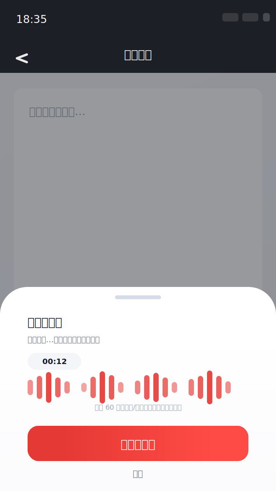
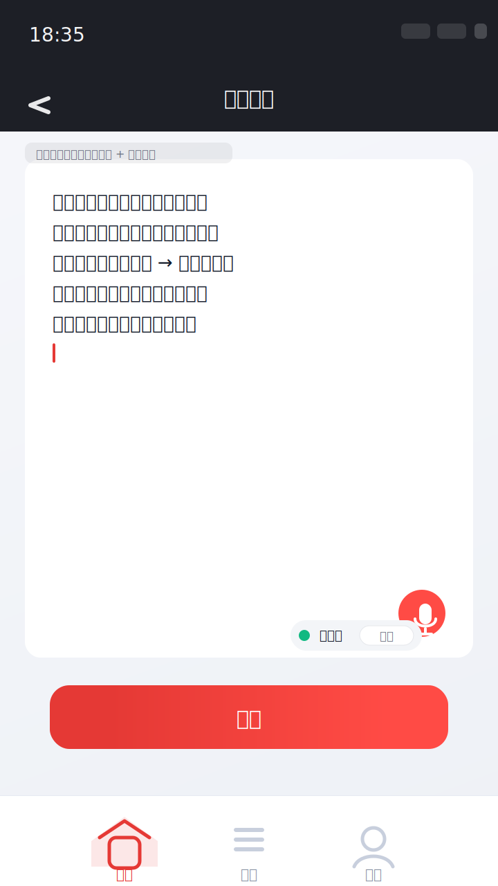

屏幕 1：文字输入页（新增麦克风按钮）
入口在文本框右下角，降低学习成本，不改变主流程。
屏幕 2：录音中（底部面板）
显式状态 + 停止/取消，避免“到底有没有在录”的焦虑。

屏幕 3：转写完成（可撤销）
默认追加到光标处，提供“撤销”回退，提交按钮变为可用。

说明：这是可落地的交互与视觉草案（基于你截图里的「文字输入」页结构）。SVG 可直接用于评审、标注、或交给视觉进一步精修。
screen1_text_input.svg、screen2_recording_sheet.svg、screen3_transcribed.svg。
当前为 Idle：点击麦克风 → 进入「请求权限/启动麦克风」状态，然后自动进入「录音中」。
注：这是产品演示级交互（用于评审/对齐），不代表最终工程实现方式。